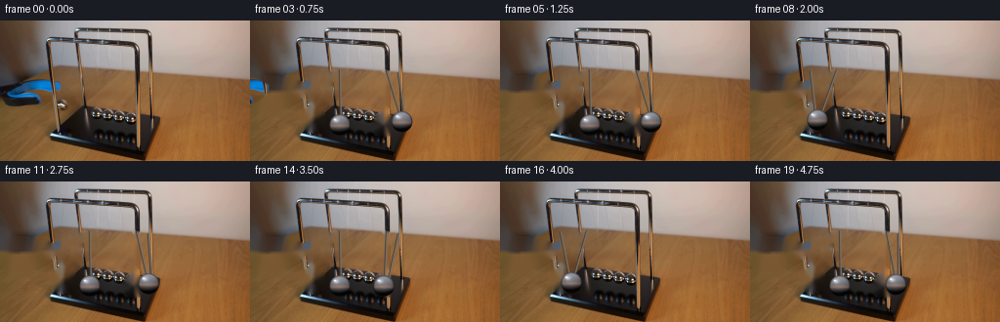
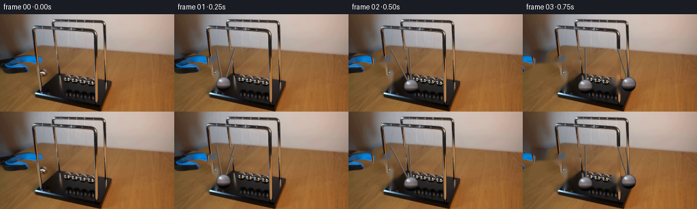

CODING AGENTS AS PIXEL WORLD MODELS
traex/GPT-5.6-Sol · 0162
点击播放 · 原生 RGB 像素
逐轮保存的候选
回放视频、检查图与代码变化。
每份候选均可单独播放。实际图片检查记录在下方工具轨迹中。
候选 01播放与检查图
点击播放 · 原生 RGB 像素


展开代码变化
--- 上一保存版本
+++ 本次保存版本
@@ -0,0 +1,173 @@
+from pathlib import Path
+
+import cv2
+import numpy as np
+from PIL import Image
+
+import artifact_io
+
+
+ROOT = Path(__file__).resolve().parent
+H, W = 144, 256
+
+
+def soft_polygon(points, blur=1.1):
+ """A small antialiased alpha matte at the output resolution."""
+ m = np.zeros((H, W), np.uint8)
+ cv2.fillPoly(m, [np.asarray(points, np.int32)], 255)
+ if blur:
+ m = cv2.GaussianBlur(m, (0, 0), blur)
+ return m.astype(np.float32) / 255.0
+
+
+def composite(dst, src, alpha, dx=0, dy=0):
+ """Translate and alpha composite a same-sized RGB layer."""
+ mat = np.float32([[1, 0, dx], [0, 1, dy]])
+ moved = cv2.warpAffine(src, mat, (W, H), flags=cv2.INTER_LINEAR,
+ borderMode=cv2.BORDER_CONSTANT, borderValue=0)
+ a = cv2.warpAffine(alpha, mat, (W, H), flags=cv2.INTER_LINEAR,
+ borderMode=cv2.BORDER_CONSTANT, borderValue=0)[..., None]
+ return np.clip(dst * (1.0 - a) + moved * a, 0, 255).astype(np.uint8)
+
+
+def chrome_ball(frame, cx, cy, radius=11.0):
+ """Paint a compact, photographic chrome sphere with soft antialiasing."""
+ # Work only on a small bounding box, at native coordinates with analytic AA.
+ pad = 3
+ x0 = max(0, int(np.floor(cx - radius - pad)))
+ x1 = min(W, int(np.ceil(cx + radius + pad + 1)))
+ y0 = max(0, int(np.floor(cy - radius - pad)))
+ y1 = min(H, int(np.ceil(cy + radius + pad + 1)))
+ yy, xx = np.mgrid[y0:y1, x0:x1].astype(np.float32)
+ nx = (xx + 0.5 - cx) / radius
+ ny = (yy + 0.5 - cy) / radius
+ rr = np.sqrt(nx * nx + ny * ny)
+ alpha = np.clip((1.035 - rr) * 10.0, 0.0, 1.0)
+ z = np.sqrt(np.maximum(0.0, 1.0 - np.minimum(rr, 1.0) ** 2))
+
+ # Reflection bands are deliberately asymmetrical: pale studio/wall above,
+ # a warm thin table reflection at the equator, and the dark base below.
+ upper = np.clip((-ny + 0.72) / 1.45, 0, 1)
+ shade = 30 + 100 * upper + 28 * z
+ shade -= 58 * np.clip((ny - 0.12) / 0.75, 0, 1)
+ shade -= 24 * np.clip(nx, 0, 1)
+ warm_band = np.exp(-((ny - 0.10) / 0.18) ** 2) * (0.35 + 0.65 * z)
+ rgb = np.empty((*rr.shape, 3), np.float32)
+ rgb[..., 0] = shade + 42 * warm_band
+ rgb[..., 1] = shade + 20 * warm_band
+ rgb[..., 2] = shade + 7 * warm_band + 9 * upper
+
+ # Broad window and pin highlights, plus the dark rim typical of a sphere.
+ broad = np.exp(-(((nx + 0.35) / 0.25) ** 2 + ((ny + 0.43) / 0.20) ** 2))
+ pin = np.exp(-(((nx + 0.48) / 0.095) ** 2 + ((ny + 0.51) / 0.085) ** 2))
+ rgb += broad[..., None] * np.array([72, 76, 79], np.float32)
+ rgb += pin[..., None] * np.array([95, 98, 98], np.float32)
+ rim = np.clip((rr - 0.82) / 0.18, 0, 1)
+ rgb *= (1.0 - 0.50 * rim[..., None])
+
+ # Very restrained sensor-like variation prevents a vector-drawn look.
+ grain = ((xx * 17 + yy * 29).astype(np.int32) % 7 - 3).astype(np.float32)
+ rgb += grain[..., None] * 0.65
+ rgb = np.clip(rgb, 4, 248)
+ patch = frame[y0:y1, x0:x1].astype(np.float32)
+ patch[:] = patch * (1 - alpha[..., None]) + rgb * alpha[..., None]
+ frame[y0:y1, x0:x1] = np.clip(patch, 0, 255).astype(np.uint8)
+
+
+def cord(frame, top, ball, color=(63, 61, 58), width=1):
+ """Draw a taut suspension cord, stopping just inside the sphere."""
+ tx, ty = top
+ bx, by = ball
+ vx, vy = bx - tx, by - ty
+ length = max(1.0, float(np.hypot(vx, vy)))
+ ex = int(round(bx - vx / length * 7.5))
+ ey = int(round(by - vy / length * 7.5))
+ cv2.line(frame, (int(tx), int(ty)), (ex, ey), color, width,
+ lineType=cv2.LINE_AA)
+ # A faint warm edge catches the room light without making the cord thick.
+ cv2.line(frame, (int(tx + 1), int(ty)), (ex + 1, ey), (123, 111, 98), 1,
+ lineType=cv2.LINE_AA)
+
+
+def build_frames(first):
+ # The grabber occupies this silhouette. Retaining its real source pixels
+ # while translating it makes its blue-black finish and highlights exact.
+ tool_points = [(0, 56), (25, 57), (46, 60), (57, 66), (57, 74),
+ (46, 82), (32, 87), (8, 89), (0, 85)]
+ tool_alpha = soft_polygon(tool_points, 0.8)
+ tool_src = first.copy()
+
+ # Clean plates are generated solely from the supplied frame. Narrow masks
+ # remove the held ball/cord and, in the second plate, the outgoing end ball.
+ clean_mask = np.zeros((H, W), np.uint8)
+ cv2.fillPoly(clean_mask, [np.asarray(tool_points, np.int32)], 255)
+ cv2.circle(clean_mask, (64, 101), 13, 255, -1)
+ cv2.line(clean_mask, (62, 53), (64, 94), 255, 3, cv2.LINE_AA)
+ cv2.line(clean_mask, (86, 52), (66, 95), 255, 2, cv2.LINE_AA)
+ clean_mask = cv2.dilate(clean_mask, np.ones((3, 3), np.uint8), iterations=1)
+ clean = cv2.inpaint(first, clean_mask, 4, cv2.INPAINT_TELEA)
+
+ right_mask = np.zeros((H, W), np.uint8)
+ cv2.circle(right_mask, (137, 107), 11, 255, -1)
+ cv2.line(right_mask, (139, 53), (137, 100), 255, 3, cv2.LINE_AA)
+ right_mask = cv2.dilate(right_mask, np.ones((3, 3), np.uint8), iterations=1)
+ clean_right = cv2.inpaint(clean, right_mask, 3, cv2.INPAINT_TELEA)
+
+ frames = [first.copy()]
+ period = 2.0 # seconds, realistic for this short cradle
+ omega = 2.0 * np.pi / period
+ max_theta = np.deg2rad(31.0)
+ pendulum_len = 54.0
+ rest_y = 107.0
+ left_rest, right_rest = 92.0, 137.0
+
+ for index in range(1, 20):
+ t = index / 4.0
+ # Ideal collision transfers the sign of this coordinate between the
+ # two edge balls. Gentle exponential damping gives a real tabletop rig.
+ q = -np.cos(omega * t) * np.exp(-0.105 * t)
+ if q < 0:
+ frame = clean.copy()
+ theta = max_theta * q
+ cx = left_rest + pendulum_len * np.sin(theta)
+ cy = rest_y - pendulum_len * (1.0 - np.cos(theta))
+ cord(frame, (88, 50), (cx, cy))
+ cord(frame, (61, 51), (cx - 2, cy))
+ chrome_ball(frame, cx, cy, 10.8)
+ else:
+ frame = clean_right.copy()
+ # Once the impact occurs, the left ball is again in the row.
+ cord(frame, (91, 50), (left_rest, rest_y))
+ chrome_ball(frame, left_rest, rest_y, 10.8)
+ theta = max_theta * q
+ cx = right_rest + pendulum_len * np.sin(theta)
+ cy = rest_y - pendulum_len * (1.0 - np.cos(theta))
+ cord(frame, (139, 51), (cx, cy))
+ cord(frame, (151, 53), (cx + 2, cy))
+ chrome_ball(frame, cx, cy, 10.8)
+
+ # The operator opens/releases immediately and withdraws the grabber.
+ # Moving the actual pixels, rather than redrawing it, keeps the material
+ # perfectly consistent with the provided first frame.
+ if index <= 3:
+ shifts = {1: -5, 2: -19, 3: -39}
+ frame = composite(frame, tool_src, tool_alpha, dx=shifts[index], dy=0)
+
+ frames.append(frame)
+
+ return np.stack(frames).astype(np.uint8)
+
+
+def main():
+ first = np.asarray(Image.open(ROOT / "first_frame.png").convert("RGB"),
+ dtype=np.uint8)
+ if first.shape != (H, W, 3):
+ raise ValueError(f"unexpected first frame shape: {first.shape}")
+ frames = build_frames(first)
+ # Contract-critical: keep the supplied first frame bit-for-bit unchanged.
+ frames[0] = first
+ artifact_io.save(frames, ROOT)
+
+
+if __name__ == "__main__":
+ main()
可观测工具轨迹
实际执行的命令与返回图片。
命令 1exit 0
/bin/bash -lc "cat prompt.txt && printf '\\n---RULES---\\n' && cat GENERATION_RULES.md"
命令 2exit 127
/bin/bash -lc "find . -maxdepth 2 -type f -printf '%p\\n' | sort && printf '\\n--- metadata ---\\n' && file first_frame.png"
命令 3exit 0
/bin/bash -lc "python - <<'PY'
from PIL import Image
import numpy as np
im=np.array(Image.open('first_frame.png').convert('RGB'))
print(im.shape, im.min((0,1)), im.max((0,1)), im.mean((0,1)))
# quantize to 16 bins and list frequent
q=(im//16)*16
u,c=np.unique(q.reshape(-1,3),axis=0,return_counts=True)
for i in np.argsort(c)[-30:][::-1]: print(tuple(u[i]),c[i])
PY"命令 4exit 0
/bin/bash -lc "cat artifact_io.py && python - <<'PY'
import cv2
print('cv2',cv2.__version__)
PY
python - <<'PY'
from PIL import Image
import numpy as np
im=np.array(Image.open('first_frame.png').convert('RGB'))
# 4x4 median, color/luma ascii. Codes: K dark, B blue, G gray, W light, O warm/brown.
for yy in range(0,144,4):
s=''
for xx in range(0,256,4):
p=np.mean(im[yy:yy+4,xx:xx+4],axis=(0,1)); r,g,b=p; L=p.mean()
if L<25:c='@'
elif L<50:c='#'
elif b>r*1.25 and b>g*1.15:c='B'
elif r>b*1.5 and r>g*1.15:c='o'
elif r>b*1.25:c=':'
elif max(p)-min(p)<15 and L>210:c=' '
elif max(p)-min(p)<20:c='.'
elif L>190:c=','
elif L>130:c=';'
elif L>80:c='-'
else:c='+'
s+=c
print(s)
PY"命令 5exit 0
/bin/bash -lc "python - <<'PY'
from PIL import Image
import numpy as np, cv2
im=np.array(Image.open('first_frame.png').convert('RGB'))
# print 2x2 labels for x=0:180,y=35:140. mask based HSV semantic
for y in range(35,140,2):
s=''
for x in range(0,180,2):
p=np.mean(im[y:y+2,x:x+2],(0,1)); r,g,b=p; L=np.mean(p)
# blue grabber, dark, bright metal neutral, thread dark, brown table
if b>r*1.32 and b>g*1.15 and b>45: c='B'
elif L<20:c='@'
elif L<40:c='#'
elif L<65:c='+'
elif max(p)-min(p)<18 and L>190:c='W'
elif max(p)-min(p)<24 and L>140:c='g'
elif max(p)-min(p)<30 and L>85:c='.'
elif r>b*1.45 and r>g*1.12:c='o'
elif r>b*1.2:c=':'
elif L>180:c='w'
elif L>110:c='-'
else:c=';'
s+=c
print(f'{y:3d} {s}')
PY"命令 6exit 0
/bin/bash -lc "python - <<'PY'
import cv2, numpy as np
im=cv2.imread('first_frame.png')
g=cv2.cvtColor(im,cv2.COLOR_BGR2GRAY)
for p2 in [10,15,20,25,30]:
c=cv2.HoughCircles(g,cv2.HOUGH_GRADIENT,dp=1,minDist=8,param1=80,param2=p2,minRadius=5,maxRadius=22)
print('p2',p2, None if c is None else np.round(c[0],1).tolist())
# major contours edges
ed=cv2.Canny(g,50,120)
cs,_=cv2.findContours(ed,cv2.RETR_LIST,cv2.CHAIN_APPROX_SIMPLE)
print('contours')
for c in sorted(cs,key=cv2.contourArea,reverse=True)[:30]:
x,y,w,h=cv2.boundingRect(c); a=cv2.contourArea(c)
print(round(a,1),(x,y,w,h))
PY"命令 7exit 0
/bin/bash -lc "python - <<'PY'
from PIL import Image
import numpy as np
im=np.array(Image.open('first_frame.png').convert('RGB'))
chars='@%#*+=-:. '
# x 40:170, y55:140, average blocks 2x2 grayscale
print(' '+''.join(str((x//10)%10) for x in range(40,170,2)))
print(' '+''.join(str(x%10//2) for x in range(40,170,2)))
for y in range(55,141,2):
s=''
for x in range(40,170,2):
v=np.mean(im[y:y+2,x:x+2])
s+=chars[min(9,int(v/256*10))]
print(f'{y:3d}{s}')
PY"命令 8exit 1
/bin/bash -lc "python - <<'PY'
import cv2,numpy as np
im=cv2.imread('first_frame.png'); g=cv2.cvtColor(im,cv2.COLOR_BGR2GRAY).astype(float)
gx=cv2.Sobel(g,cv2.CV_64F,1,0); gy=cv2.Sobel(g,cv2.CV_64F,0,1)
for rad in [8,9,10,11,12,13,14,15]:
sc=[]
for y in range(55,130):
for x in range(25,170):
ts=np.linspace(0,2*np.pi,48,endpoint=False); xx=np.rint(x+rad*np.cos(ts)).astype(int); yy=np.rint(y+rad*np.sin(ts)).astype(int)
# radial derivative outward
s=np.mean(np.abs(gx[yy,xx]*np.cos(ts)+gy[yy,xx]*np.sin(ts)))
sc.append((s,x,y))
# nms
out=[]
for s,x,y in sorted(sc,reverse=True):
if all((x-a)**2+(y-b)**2>rad**2 for _,a,b in out): out.append((s,x,y))
if len(out)>=12:break
print('\\nr',rad,[(round(a),b,c) for a,b,c in out])
PY"命令 9exit 0
/bin/bash -lc "python - <<'PY'
from PIL import Image
im=Image.open('first_frame.png')
im.resize((1024,576)).save('.tmp/up.png')
PY
ls -l .tmp/up.png"命令 10exit 0
/bin/bash -lc "python - <<'PY'
from PIL import Image
import numpy as np
im=np.array(Image.open('first_frame.png').convert('RGB'))
# table color dominant fill. list coords for pixels dark/metal/blue around x40:170 y40:140
for name,cond in [
('blue',lambda r,g,b:(b>r*1.3)&(b>g*1.15)&(b>50)),
('black',lambda r,g,b:(r+g+b<75)),
('neutralbright',lambda r,g,b:(np.maximum.reduce([r,g,b])-np.minimum.reduce([r,g,b])<18)&(r+g+b>480))]:
r,g,b=[im[:,:,i].astype(float) for i in range(3)]; m=cond(r,g,b); ys,xs=np.where(m)
print(name,'n',len(xs),'bbox', (xs.min(),ys.min(),xs.max(),ys.max()))
# per y ranges inside ROI
for y in range(40,141,5):
xx=np.where(m[y:y+5].any(axis=0))[0]
xx=xx[(xx<180)]
if len(xx):
# runs
cuts=np.r_[0,np.where(np.diff(xx)>1)[0]+1,len(xx)]
rr=[(int(xx[a]),int(xx[z-1])) for a,z in zip(cuts[:-1],cuts[1:]) if z-a>=2]
if rr: print(y,rr)
PY"命令 11exit 0
/bin/bash -lc "python - <<'PY'
import cv2,numpy as np
im=cv2.imread('first_frame.png'); g=cv2.cvtColor(im,cv2.COLOR_BGR2GRAY)
e=cv2.Canny(g,60,140)
lines=cv2.HoughLinesP(e,1,np.pi/180,threshold=18,minLineLength=14,maxLineGap=4)
for a in lines[:,0]:
x1,y1,x2,y2=map(int,a); ang=np.degrees(np.arctan2(y2-y1,x2-x1)); le=np.hypot(x2-x1,y2-y1)
if 30<min(y1,y2) and max(y1,y2)<135: print(tuple(a),'len',round(le),'a',round(ang))
PY"命令 12exit 0
/bin/bash -lc "python - <<'PY'
from PIL import Image
import numpy as np
im=np.array(Image.open('first_frame.png').convert('RGB'))
for y in range(80,141,5):
print('y',y)
for x in range(45,161,5):
p=im[y,x]
print(f'{x}:{p[0]:02x}{p[1]:02x}{p[2]:02x}',end=' ')
print()
PY"命令 13exit 0
/bin/bash -lc "python generate.py && python - <<'PY'
from PIL import Image
import numpy as np
f=np.stack([np.array(Image.open(f'frames/{i:02d}.png')) for i in range(20)])
a=np.array(Image.open('first_frame.png').convert('RGB'))
print(f.shape,f.dtype,'first exact',np.array_equal(f[0],a))
print('changed pixels',[(i,int(np.any(f[i]"'!=f[i-1],2).sum())) for i in range(1,20)])
PY'命令 14exit 0
/bin/bash -lc "python - <<'PY'
from PIL import Image
import numpy as np
chars='@%#*+=-:. '
for fi in [0,1,2,3,4,5,6,8,10,12,16,19]:
im=np.array(Image.open(f'frames/{fi:02}.png').convert('RGB'))
print('\\nFRAME',fi)
for y in range(45,141,4):
s=''
for x in range(0,180,4):
v=np.mean(im[y:y+4,x:x+4]); s+=chars[min(9,int(v/256*10))]
print(s)
PY"命令 15exit 0
/bin/bash -lc "ls -lh pixels.npz inspection.png index.html frames/00.png frames/19.png && python -m py_compile generate.py && python - <<'PY'
import numpy as np
z=np.load('pixels.npz')['pixels']
print('packed tensor',z.shape,z.dtype)
PY"保存候选 1 份；完成命令 15 次；可验证图片返回 0 张。原始 API 响应与完整日志保留在本地。